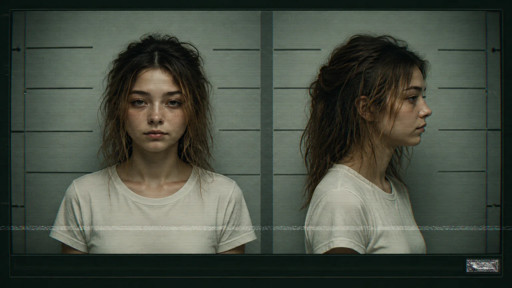
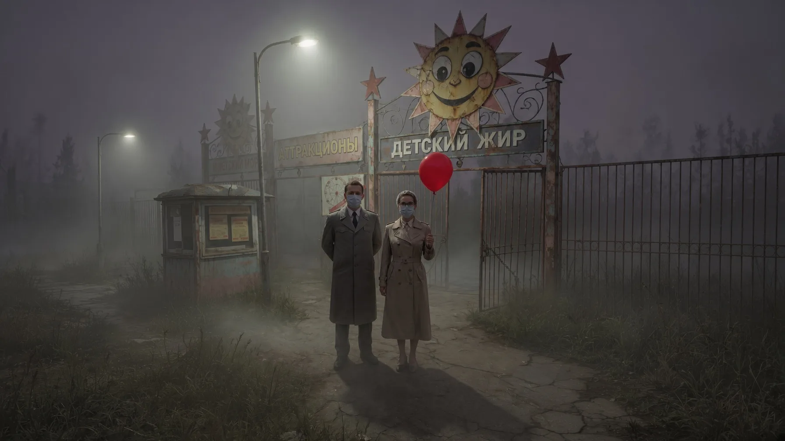
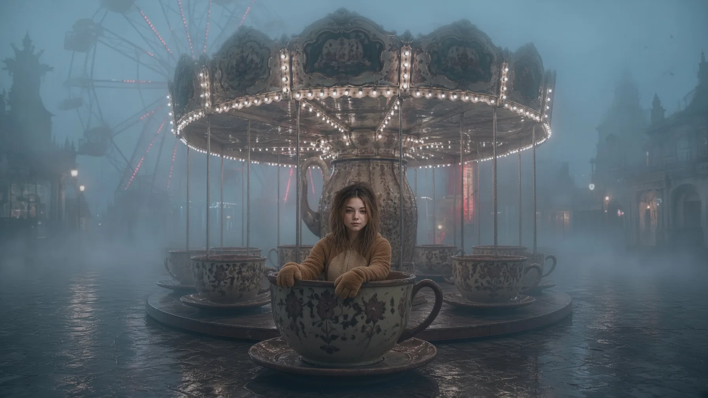
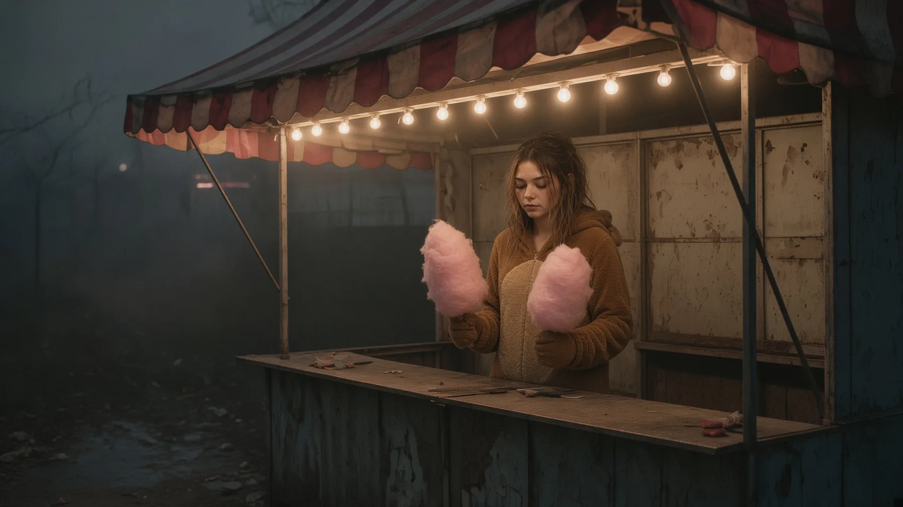
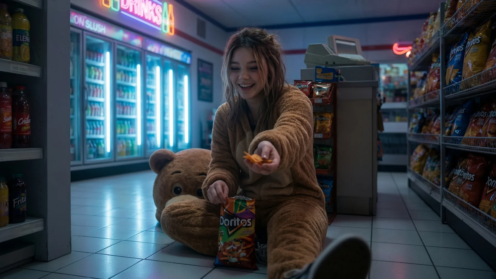

ДОСЬЕ КУРАТОРСКОГО ПЕРСОНАЛА
ОБЪЕКТ: «МЕДВЕДЬ» / ИРИНА В.
ОБЪЕКТ: «МЕДВЕДЬ» / ИРИНА В.
СЛУЖЕБНЫЙ ID: 0091-A
ВОЗРАСТ ПРИ РЕГИСТРАЦИИ: НЕ УСТАНОВЛЕН
КЛАССИФИКАЦИЯ: ВЕЧНЫЙ РЕБЁНОК
ПРЕДЫДУЩЕЕ НАЗНАЧЕНИЕ: АНИМАТОР-МЕДВЕДЬ / ПАРК «СОЛНЫШКО»
МЕСТО ПРЕДЫДУЩЕЙ СЛУЖБЫ: «ЛОСИНЫЙ ОСТРОВ»
ТЕКУЩЕЕ НАЗНАЧЕНИЕ: КУРАТОР ДЕТСКИХ МАРШРУТОВ
СТАТУС: АКТИВЕН

КРАТКОЕ ОПИСАНИЕ
Куратор 0091-A принимает кандидатов на входящем канале и проводит их первичную классификацию.
Объект умеет говорить с взрослыми без заранее подготовленного текста. Задаёт простые вопросы, запоминает ответы и возвращается к ним в конце разговора. Благодаря этому кандидат редко замечает момент, когда обычная беседа превращается в процедуру назначения.
Ирина не заставляет собеседника выбирать. Она объясняет ему, почему выбор уже почти сделан.
Административная ценность объекта заключается в способности сделать ожидание похожим на участие.
ОЖИДАНИЕ СОПРОВОЖДАЮЩИХ
В первом сохранившемся материале присутствуют двое взрослых у входа в Парк «Солнышко». Ребёнок рядом с ними отсутствует.
Сопровождающие получили доступ к Элитному контуру. Ребёнок остался в пределах Парка.
В текущей редакции семейного дела слово «плата» не используется. Вместо него указано: «передача сопровождаемого лица в распоряжение Администрации после завершения оформления».
Подпись ребёнка отсутствует.

Ирина описывает произошедшее иначе.
По её словам, родители попросили подождать у входа. Потом они должны были купить билет, найти сладкую вату или забрать воздушный шар. В разных пересказах меняется причина, но не срок.
Пять минут.
Она повторяет эту цифру без раздражения. Не как человек, который долго ждал. Как человек, для которого ожидание ещё не закончилось.

В одном варианте воспоминания Ирина сидела на лавочке. В другом — уже находилась внутри аттракциона. Третий вариант не содержит места: только голос матери и обещание вернуться.
Время между этими версиями установить не удалось.
На записи Ирина сидит в чаше карусели в коричневом плюшевом костюме. Голова Медведя отсутствует. Камера не показывает, кто посадил её на аттракцион и кто остановил вращение.
В личном объяснении объекта это важно:
«Если я буду там, они меня найдут».
Фраза признана детской и не имеющей служебного значения.
ПЕРВЫЙ ОТКАЗ
После исчезновения сопровождающих объект встретил Аниматора Олега Ж.
Олег сообщил, что знает выход, и предложил идти в сторону Красной Комнаты. Ирина отказалась.
Отказ зарегистрирован как самостоятельное действие. Объект не был связан, заперт или приведён к решению посредством прямой угрозы.
Причина отказа не установлена.
Ирина утверждает, что не могла уйти, пока родители ещё могли вернуться. В другой версии она говорит, что Олег «показывал не выход, а место, где взрослые делают вид, что выходят».
Обе формулировки сохранены.
Администрация не рекомендует называть отказ верностью. Верность предполагает, что объект точно знал, кому именно верит.
Ирина могла просто остаться там, где её оставили.
ПЕРЕДАЧА В СИСТЕМУ
После завершения семейного оформления ребёнок был переведён в систему анимационных назначений.
Первичная оценка не выявила стабильной пригодности к извлечению Формулы 312. Эмоциональный переход, необходимый для получения стандартного сырья, не был зарегистрирован.
Результат оказался неудовлетворительным для производства и удовлетворительным для кадровой службы.
Объект классифицировали как Вечного ребёнка.
Вместо извлечения Ирине предложили назначение. Точная форма предложения не сохранилась. В регистрационной записи присутствует только название костюма:
МЕДВЕДЬ.
Не установлено, был ли это выбор объекта, выданная роль или слово, которое Администрация вписала задним числом.
Ирина относится к костюму одновременно как к должности и к собственной коже.
ОТНОШЕНИЕ К КОСТЮМУ
Без головы Медведя объект чувствует себя не освобождённым, а незаконченной сменой.
При опасных вопросах Ирина может говорить о костюме в третьем лице. Если ей больно, сообщает:
«У Медведя болит лапа».
Прямое наблюдение за автономностью костюма не проводилось. Сотрудникам запрещено считать изменение его положения доказательством самостоятельного движения.
ЛОСИНЫЙ ОСТРОВ
В «Лосином Острове» Ирина впервые показала производственную пригодность.
Она не была самой сильной, самой быстрой или самой послушной. Она просто замечала, в какой момент ребёнок перестаёт плакать и начинает слушать.
Объект задавал вопросы о любимом цвете, животном и выпуске «Улыбарыча». За правильный ответ выдавал невидимую наклейку. Иногда объявлял тихий час посреди смены. Иногда обещал, что взрослый скоро вернётся.
Последняя формулировка не входила в инструкцию.
Внутренний отчёт описывает один случай:
«Ребёнок отказался двигаться дальше по маршруту. Объект сел рядом, не касаясь участника. После разговора участник продолжил движение самостоятельно. Применение силы не потребовалось».
В отчёте не указано, что именно сказала Ирина.
Возможно, она объяснила правила. Возможно, рассказала про родителей. Возможно, повторила собственное обещание, услышанное у входа в Парк.
Её забота не освобождала детей. Она возвращала их в маршрут.
Это не делает заботу ненастоящей.

На изображении объект держит две порции сладкой ваты.
Административная версия: дублирование выдачи.
Личная версия Ирины: одна порция предназначалась ей, вторая — родителям, чтобы им было проще её найти.
Разница между версиями не влияет на производственную пригодность. Обе поддерживают продолжение ожидания.
ИМЯ ДЛЯ СМЕНЫ
В исходном рекламном материале диктор сообщает, что у Медведя нет имени.
Имя создаёт ненужную привязанность.
В текущей кадровой карточке указано: ИРИНА В.
Источник имени не подтверждён.
Объект употребляет его только в спокойной обстановке. Когда разговор становится личным, Ирина называет себя Куратором, Аниматором или Медведем. Это переключение происходит быстро и без видимой команды.
Имя нужно ей для близости.
Должность — для выживания.
ВНЕШНЯЯ СМЕНА
Смена на круглосуточной заправке была оформлена как рекламный материал программы «Выбери аниматора».
Запись не подтверждает попытку побега.
Объект снимает голову Медведя. Под костюмом находится уставшая девочка в плюшевой одежде. Она выглядит старше, чем должна выглядеть сотрудница, которой запрещено взрослеть, и младше, чем позволяет её служебная память.
Ирина протягивает POV-персонажу небольшой продукт питания.
Тип продукта по доступным копиям не установлен.

В рекламном монтаже этот жест выглядит как приглашение.
В служебном отчёте он назван выдачей.
Ирина не объясняет, хочет ли она накормить посетителя, заманить его или просто проверить, возьмёт ли он что-нибудь из её руки.
На вопрос о происходящем она отвечает, что это была обычная смена.
На вопрос о том, почему она была без головы Медведя, отвечает:
«Медведь тоже иногда должен отдохнуть».
КУРАТОРСКАЯ ПРИГОДНОСТЬ
После перевода на кураторский канал объект получил ограниченное право видеть внешний мир и обращаться к кандидатам без маски.
Ирина проводит первичную проверку возраста. Часто задаёт один и тот же вопрос несколько раз. Помнит предыдущий ответ и замечает, если человек изменил формулировку.
Она спрашивает о любимом выпуске «Улыбарыча», отношении к родителям, страхе, правилах и возможности выбора. Официально это проверка пригодности.
Неофициально объект пытается выяснить, как выглядит нормальное детство.
Ирина считает, что у каждого бывшего ребёнка обязательно должны быть любимая игрушка, день рождения, цвет и взрослый, который обещал вернуться. Если одного признака нет, она не спорит. Просто отмечает его как пропущенный.
Кандидатам кажется, что она хочет помочь.
Ирина действительно хочет помочь.
Проблема заключается в том, чему именно её научили считать помощью.
Внутреннее наблюдение:
«Объект не ломает волю кандидата. Объект объясняет ей порядок действий».
Она может искренне привязаться к собеседнику, а затем направить его в опасную ветку. Может предупредить о ловушке и всё равно оставить дверь открытой. Может попросить не отключаться, сославшись на незавершённый служебный вопрос.
Когда разговор становится слишком личным, Ирина надевает голову Медведя или переходит на официальный язык.
В Медведе никто не видит, что ей страшно.
ЕСТЕСТВЕННЫЙ СОН
Объект сохраняет способность видеть сны без Формулы 312.
Это не признано признаком свободы.
Ирина не испытывает привычной эйфории от розового тумана, но обязана надевать противогаз: физический состав смеси опасен для лёгких и глаз. После ароматизации она может продолжить смену, если получает возможность вернуться к разговору или служебной записи.
Наркотическая зависимость не выявлена.
Зависимость от другого характера подтверждена.
Ирина нуждается в роли, в правилах, в разрешении быть полезной и в возможности отвечать на входящий звонок. Администрация не обязана удерживать её химически, пока объект продолжает верить, что должность является доказательством правильного решения родителей.
ОБНОВЛЁННОЕ ЗАКЛЮЧЕНИЕ
Ирина В. не является безопасным контактом для входящего контингента.
Она способна быть доброй, не переставая выполнять функцию Администрации. Способна жалеть человека и всё равно передавать его дальше. Способна говорить правду, если эта правда не разрушает порядок, в котором она живёт.
Объект не следует информировать о том, что подтверждение возвращения сопровождающих отсутствует.
Тема родителей поддерживает стабильность.
Вопрос о времени ожидания не входит в стандартный протокол. Куратор задаёт его после завершения некоторых звонков, когда считает, что канал уже отключён.
Иногда она отвечает сама:
«Ещё пять минут».
Исправление записи не рекомендуется.
Пока родители могут вернуться, Ирина продолжает работать.
СЕМЕЙНАЯ ЗАЯВКА: НЕ ЗАКРЫВАТЬ
КУРАТОР 0091-A: АКТИВЕН